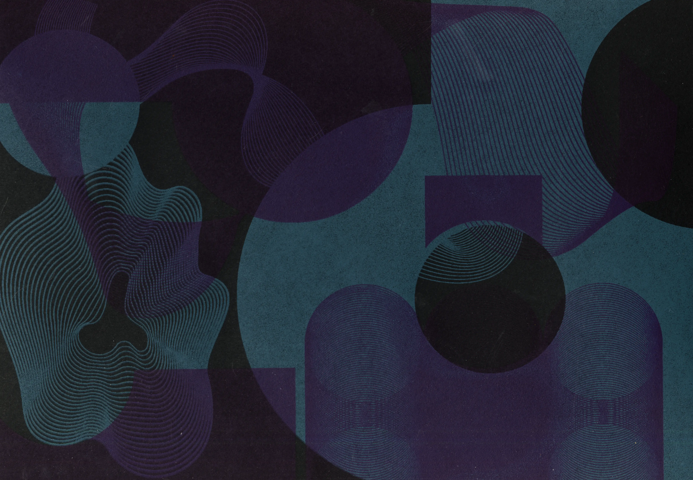
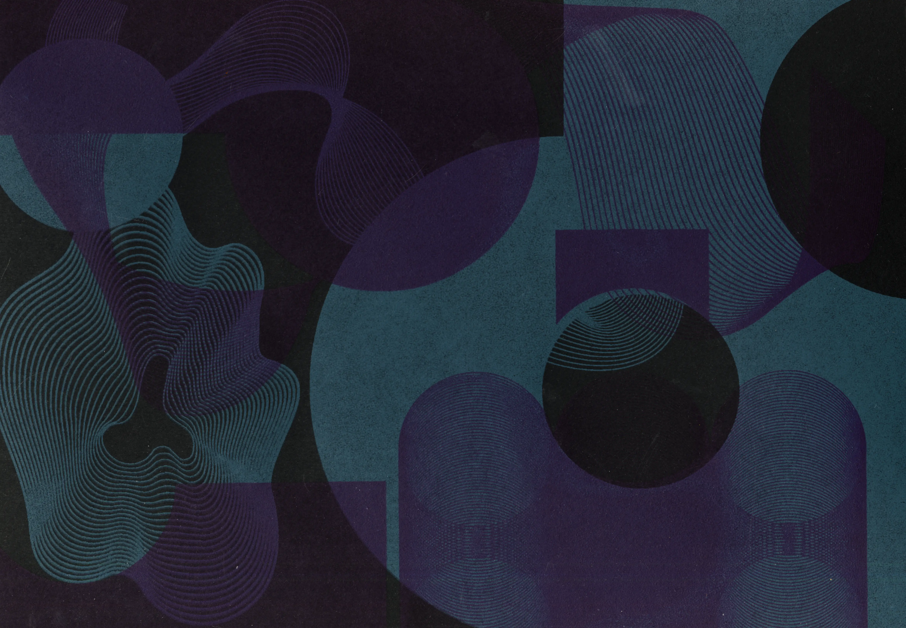

61 Years Uldry x 61 Posters
Mit Farbe zu arbeiten braucht Mut, Neugier und eine grosse Portion Experimentierfreude. Welche Farbschichten
übereinander was ergeben, entdeckt man erst, wenn man es ausprobiert. In der Siebdruckwerkstatt ist genau
das möglich: testen, mischen, überlagern, verwerfen und neu beginnen. Besonders mit Sonderfarben entstehen
Kombinationen, die man vorher nicht planen kann.
So ist ein kreatives, vielschichtiges Plakat entstanden – gestaltet gemeinsam mit meiner ganzen Stufe zum
60+1-Jubiläumsjahr der Uldry AG.
61 Years Uldry x 61 Posters
2025
in Zusammenarbeit mit Uldry AG
SIEBDRUCK / POSTERDESIGN
Dozent*innen:
/ Martin Infanger
@ Fachklasse Grafik Luzern
2025
in Zusammenarbeit mit Uldry AG
SIEBDRUCK / POSTERDESIGN
Dozent*innen:
/ Martin Infanger
@ Fachklasse Grafik Luzern


 
